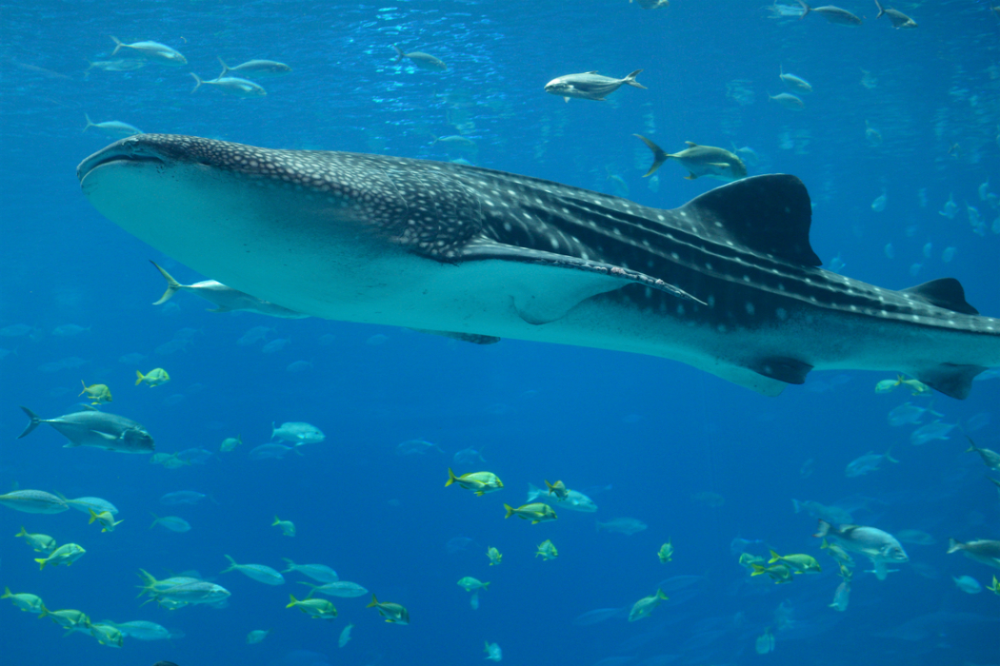

Alimentación del tiburon ballena.

Es una de las tres especies de tiburones que se alimentan mediante un mecanismo de filtración del agua, junto con el tiburón peregrino (Cetorhinus maximus) y el tiburón boquiancho (Megachasma pelagios). Se alimenta principalmente de fitoplancton, necton, macro algas, y kril, pero a veces también lo hace de crustáceos, como larvas de cangrejo, calamares, y bancos de peces pequeños, como las anchovetas, sardinas, caballa, y atún.
|